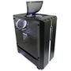
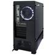
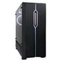
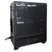
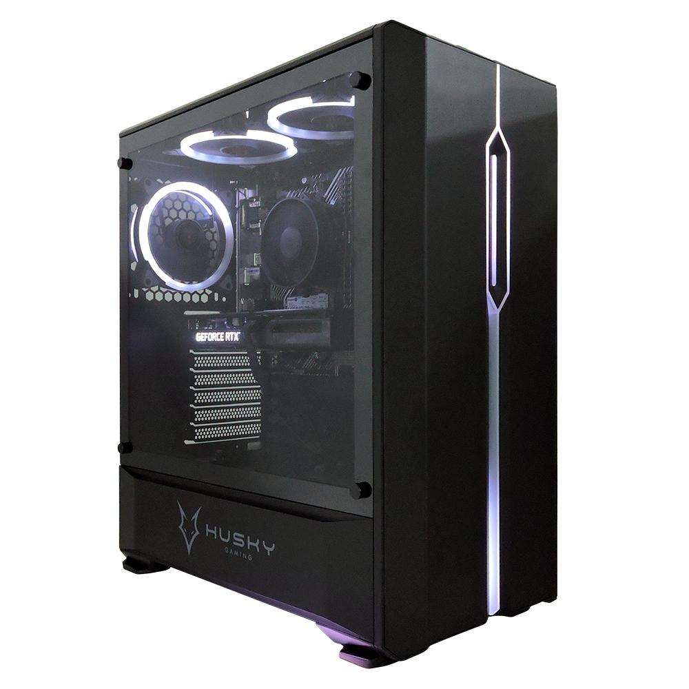

R$ 6.649,99
À vista no PIX com até 10% OFF
R$ 7.388,88
Em até 10x de R$ 738,88 sem juros no cartão
Ou em 1x no cartão com até 10% OFF
Escolha o seu próximo dispositivo digital!
À vista no PIX com até 10% OFF
R$ 7.388,88
Em até 10x de R$ 738,88 sem juros no cartão
Ou em 1x no cartão com até 10% OFF
O Computador Concórdia Avalanche Preto, vem equipado com processador Intel Core i7-10700F com 8 Núcleos e 16 Threads e Frequência de 4.80hz no modo Turbo, Placa Mãe Asus H510m-e, 16GB de Memoria Corsair Vengeance LPX 8Gb 2666MHz DDR4, com esses hardwares você irá ter potência no seu gameplay e também nas suas tarefas do dia-a-dia, atualizações de desempenho incríveis para melhorar a produtividade, proporcionando entretenimento surpreendente.
O Computador Gamer da Concórdia conta com SSD de 500GB NVME, garantindo velocidade e armazenamento, ainda conta com a Placa de Vídeo RTX 3060 12GB Ghost que irá garantir melhor desempenho em jogos como League of Legends, Valorant, Fortnite, Rainbow Six e CS:GO e os jogos mais recentes.
O Computador é equipado com uma Fonte de alimentação de 650W reais com 80 Plus Bronze e PFC Ativo, que traz energia estável para não ter nenhum problema enquanto joga.